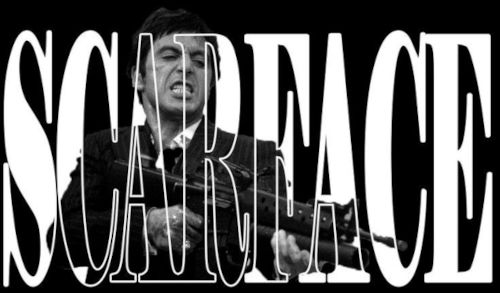

Quem é Tony Montana
Tony Montana é um imigrante cubano que chega aos Estados Unidos em busca de uma nova vida. Ambicioso, impulsivo e determinado, ele entra no mundo do crime em Miami e rapidamente sobe de posição.
Com sua personalidade forte e sua busca por poder e respeito, Tony constrói um grande império, tornando-se uma das figuras mais temidas e influentes do submundo.

A Ascensão de Tony Montana
A jornada de Tony Montana começa quando ele chega a Miami durante o êxodo de refugiados cubanos. Sem dinheiro e sem oportunidades, ele vê no crime uma forma rápida de alcançar sucesso.
Com coragem e pouca paciência para ordens, Tony elimina seus rivais e conquista espaço no tráfico de drogas. Sua ambição o leva ao topo, cercado por luxo, dinheiro e poder. Porém, seu estilo de vida intenso e suas decisões impulsivas acabam criando inimigos e colocando seu império em risco.